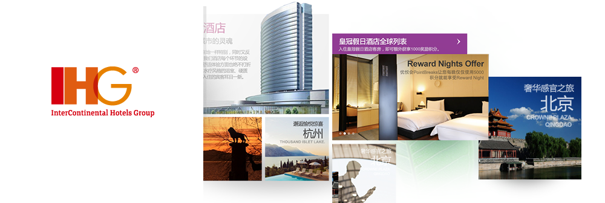
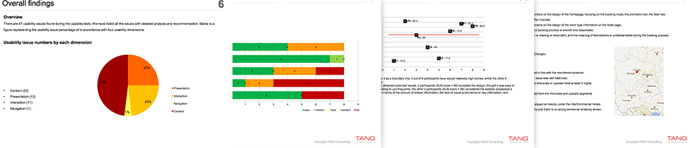
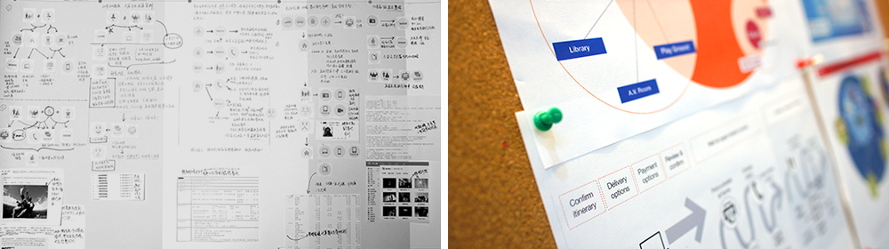
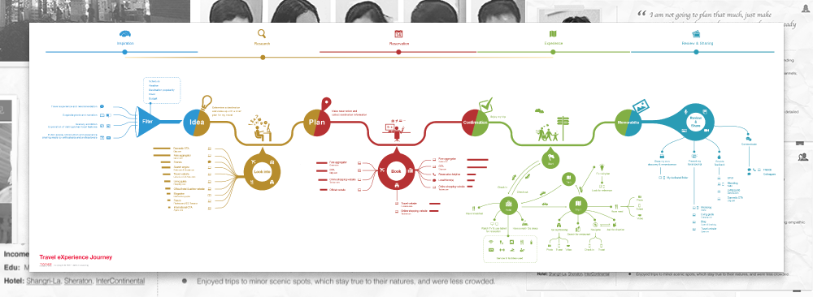
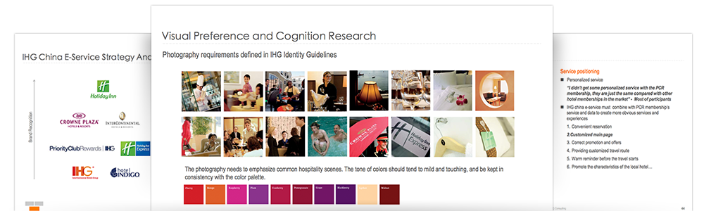
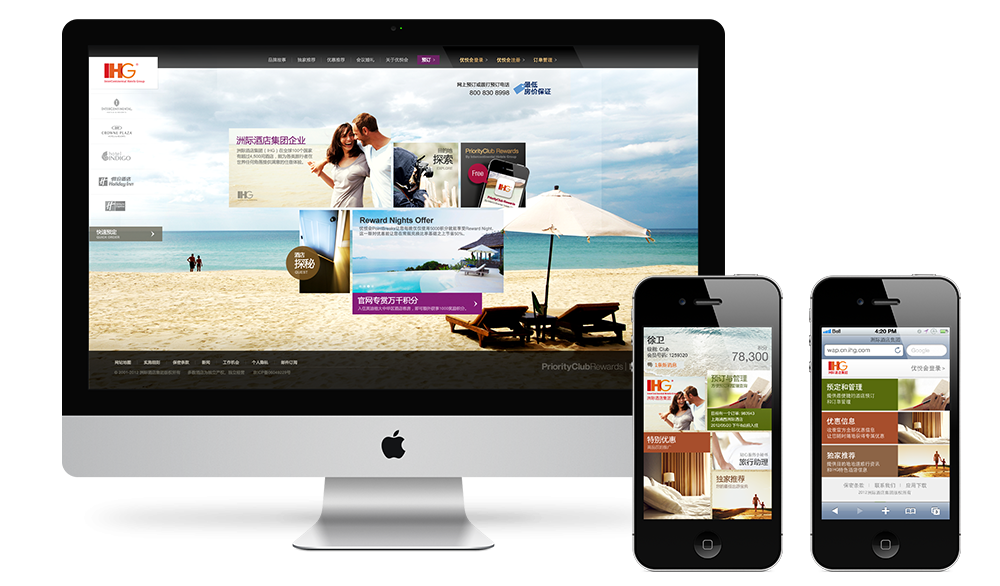
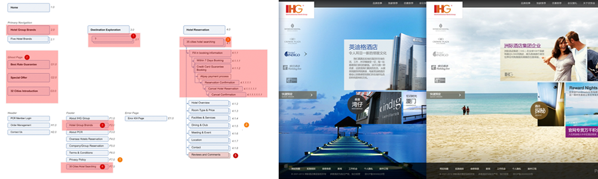
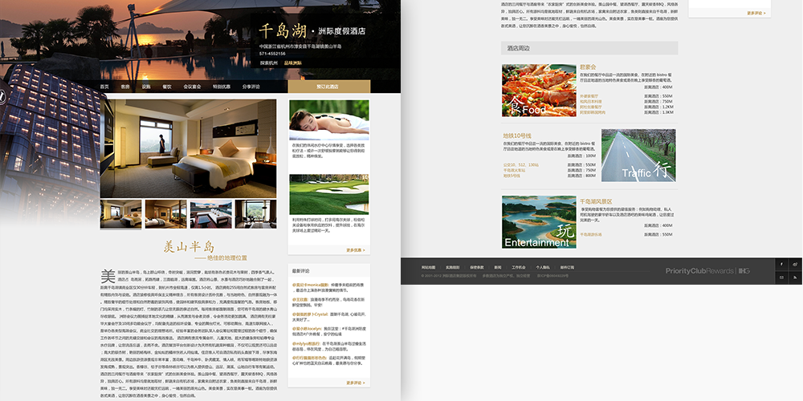
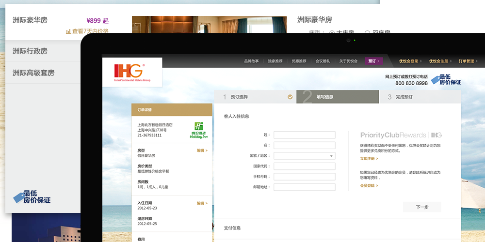
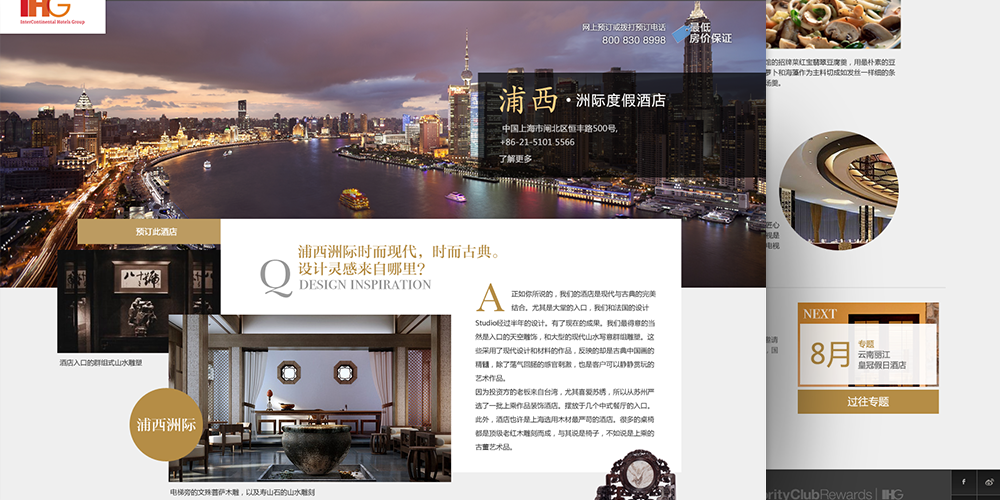

About
InterContinental Hotels Group (IHG), founded in 1946, has become the world’s largest hotel management group with a strong distribution network. IHG has brands such as InterContinental Hotels & Resorts, Holiday Inn, Crowne Plaza Hotels & Resorts, Holiday Express, Indigo, Candlewood and Staybridge, and boasts over 55 years of experience in management of international hotels. IHG is also the hotel group with the world’s highest number of rooms (up to 540,000) in nearly 100 countries.
My role
Interaction Design and Usability Testing, Customer Experience Journey design
Background
TANG began its cooperation with IHG in 2011, when IHG’s U.S. headquarters initiated a re-design of their Chinese website and invited TANG to carry out analysis and research on usability and localization of the design. Over 6-months of qualitative research (3 rounds on 40 users in 5cities), TANG and IHG systematically analyzed the use cases of the new version of the website amongst Chinese users of different personas and provided a design proposal which visually presented some localization issues.
After about one year of efficient cooperation, IHG’s decision-makers realized that it might be better for a local team to address localization issues, thus kicking off the customization of IHG’s all-new Chinese website.
Research & Exploration
Since the very beginning of the project, TANG and IHG’s Chinese team have realized that an official website is only part of the process of a customer’s contact with the hotel’s several services. If the role of an official website is to be clearly defined, they should consider the services and contents delivered through the channel based on an overall plan of the service system. Different from IHG’s previous methods for planning a service system, we closely focused on the target customers to develop a new service system model based on customer experience.
We conducted a new round of the most in-depth customer research. Instead of simply focusing on exploring the functions and designs, the research was targeted at the details of the contact between customers and hotels – the whole journeys that they had experienced. To enable each interviewed customer to fully share their views and suggestions with us, we assigned pre-interview work for them, to summarize their wonderful stories and experiences during the journeys.
Through qualitative research amongst more than ten target customers in two large regions in China, we’ve gained a large number of stories, information, views and suggestions. We further analyzed the extensive data to gradually form a clear definition of IHG’s target customers in China and depicted the overall framework and all details of their experience journeys.
Design strategy and core strengths
After a description of the complete customer experience journey was completed, a strategy discussion with IHG China’s relevant departments was held. The two teams planned several core strategic directions such as cross-channel experience and strengthening of the parent brand regarding all parts in the experience journey based on core values that the website should deliver.
Layout of cross-channel experience
What IHG’s Chinese website delivers is not simply functions, but a service package that corresponds to the customer experience journey. The service package includes a series of cross-scenario and cross-channel services provided by the website, mobile devices and hotels which have been designed based on typical behaviors of target customers, and ensures that customers enjoy a complete, seamless experience in their journey.
Stronger brand construction
IHG’s Chinese website is more of an official website for a hotel group than a hotel’s. Each of IHG’s five brands in China has a clear market positioning and an independently-operated promotion system. They are even more widely recognized than the parent brand. So, the issue that needs to be addressed urgently is how to enable customers to accurately understand the relationship between different brands through the website and to build up a strong parent brand awareness among the many sub-brands.
Through much trial and adjustment, we’ve summarized content resources and information frameworks of both the parent brand & sub-brands and determined the content and interaction & visual systems of the parent brand to help it enforce its strong position. Moreover, we’ve depicted cultural characteristics and visual differences related to the sub-brands.
Hotel experiences that touch hearts
IHG is a high-quality and well-reputed hotel group. We want customers to enjoy the service package, experience and brand charm that IHG offers, rather than feel that they are simply choosing a hotel. Therefore, we’ve reconsidered and redesigned IHG’s hotel contents because guests are no longer content with basic information such as prices and room types. We will offer customers a more personal experience to the hotel, so they can listen to its stories and experience its cultural atmosphere.
Simplest booking process
The core business of a hotel’s website has typically been focused on increasing in the number and success rate of online booking. Therefore, we’ve carefully developed the simplest booking process in the industry. We designed a preview page to reduce reliance on the Hotel Details page, thus decreasing the number of page jumps and making it easier to make choices or comparisons. Moreover, we have incorporated all procedures into three steps by simplifying and integrating the payment process in a bold and decisive way to ensure minimum error and bounce rates.
Innovative services
The customer experience journey shows that the customers’ contact with hotels is a complete journey. So, how to motivate customers from a journey perspective rather than being limited to existing hotels becomes the core direction for our innovation. “Destination exploration” is one of our groundbreaking attempts to provide one-stop services for customers that will soon arrive at IHG’s hotels, such as information about the culture, history, scenic spots, fine dining, and suggestions of target cities and surrounding areas, thus further improving brand recognition among customers through considerate, non-marketing website content.
Feedback and Landing
We helped complete IHG’s Chinese website concept plan in 2011, which was highly recognized by IHG China and its U.S. Headquarters from research analysis to strategic design. Through joint promotion and efforts, IHG decided to independently design its Chinese official website in late 2012 to make it the first local website different from the international one. Meanwhile, since late 2013, IHG began to integrate the Chinese websites of its sub-brands, making IHG’s Chinese website the only official website in Mainland China.
In early 2013, TANG started the detailed design of IHG’s new Chinese website. By the middle of 2013, IHG Chinese website saw a 3-fold increase in the number of online bookings than two years before.